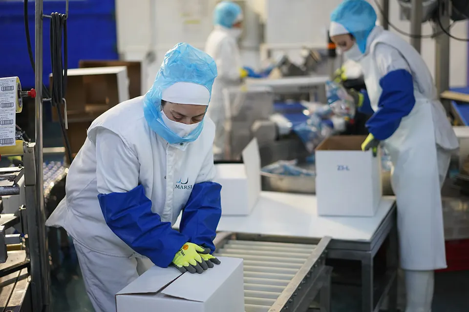

A quality philosophy across the whole process
We apply high quality and food safety standards. Our Quality Department carries out strict checks from raw material intake to dispatch.
Checks at every stage
Intake
Temperature, batch, paperwork and condition of the raw material.
Processing
Weights, sizes, defects and times recorded on the line.
Freezing and glazing
Core temperature and glazing percentage.
Finished product
Labelling, batch traceability and release by Quality.
Certifications
We work to the standards European retail requires.
IFS
International GFSI-recognised food safety standard required by major retailers.
MSC
Traceability for products from certified sustainable fisheries.
ASC
Traceability for products from certified responsible aquaculture.
Friend of the Sea
Recognition of sustainable fishing and aquaculture practices.

Confidentiality and transparency
We are fully transparent with our clients about processes and production controls, and keep the details and specifications of their products private. We provide the records and documents you need for your audits.
Need our quality documentation?
We’ll send you certificates and specification sheets.